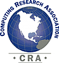

- development -
Partner Selections Main Partners Page Find a Partner Become a Partner Partner Resources Training - Whether your staff is just getting started using Borland technology or you have experienced developers who wish to pursue formal certification, we can meet your needs. .NET Framework Borland brings e-business development to your fingertips with our award-winning development platforms. Borland Enterprise Server AppServer Edition VisiBroker Edition Web Edition InterBase JDataStore The Borland e-business implementation platform offers control, visibility, monitoring and management to meet the required service levels. AppCenter Partner Programs - If you want a business partner committed to helping you grow your company or institution, talk to us.
|
This site is one of the many ways we are carrying out that mission. We hope you find it informative and useful, and invite you to send us your comments and suggestions. We will use your input to focus its continued development. As a state agency, MIEMSS, must adhere to the Annotated Code of Maryland State Government in regard to the collection of personal information. This Privacy Policy is available for viewing or downloading. |
|  |
has powerful marketing tools like contact tracking and built-in mail merge. DataLicense is a 4th Dimension code library containing no plug-ins, so it's easy to customize to fit your needs. Services Custom Database Development Have some business requirements that no off-the-shelf software can handle. We can build Macintosh or Windows software to your specifications. . |
|
. Water Resources Data System Water Resources Data System State Climate Office At the Department of Civil and Architectural EngineeringUniversity of Wyoming An Overview of the Water Resources Data System The Water Resources Data System is a clearinghouse of hydrological and climatological data for the State of Wyoming. Funded from an allocation from the Wyoming Water Development Commission, the System offers a wide range of products and services to its users. As of 01 September 2001, the State Climatologist Office has been combined with WRDS in order to better integrate the functions of these two environmentally related disciplines. . |
read more at: http://www.netron.com/